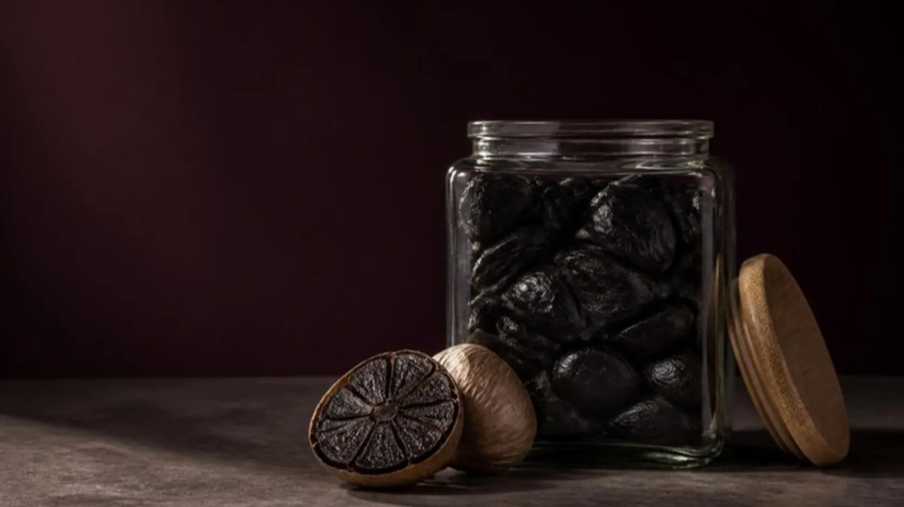
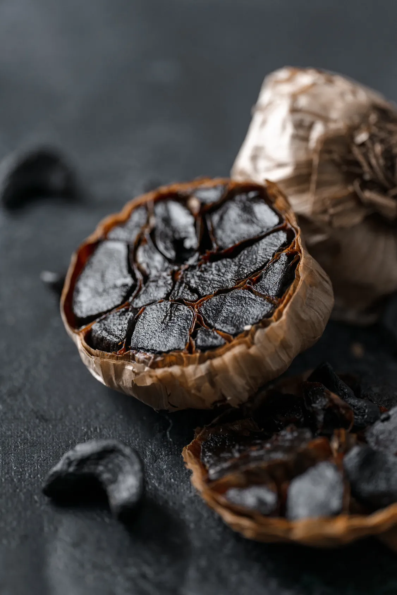

ثوم أسود · متعتّق في مصر
ثوم،
اديناله وقته.
ثوم مصري بيتعتّق ٢١ يوم لحد ما يسودّ ويطرى، ويبقى طعمه حلو ومالح زي البلسميك.
- 1
- مكوّن واحد: ثوم
- 21
- يوم تعتيق على حرارة هادية
- 0
- سكر مضاف أو مواد حافظة
المتجر
منتجاتنا


مصاريف التوصيل بتتحدد حسب العنوان، وبنأكدها معاك قبل أي دفع

إيه هو
ثوم مصري،
اتعتّق ٢١ يوم.
مكوّن واحد. ٢١ يوم. ولا حاجة تانية. الحرارة الهادية بتخلّي السكر والبروتين اللي في الثوم يتفاعلوا ببطء، فالحدة بتروح، ويفضل طعم عميق مالوش اسم في المطبخ المصري لسه.
مش مخمّر، ولا فيه فطر.
اللون الأسود من تفاعل ميلارد: السكر والبروتين اللي في الثوم بيتفاعلوا ببطء مع الحرارة الهادية، زي العيش لما يتحمّص.
من أبيض لأسود في ٢١ يوم
- يوم ٠
ثوم مصري طازج
بصل كامل، أبيض وحاد زي أي ثوم.
- يوم ٧
بيبدأ يغمق
الفص بياخد لون عسلي، والحدة بتبدأ تهدى.
- يوم ١٤
الحلاوة بتطلع
بني غامق، وطعم كراميل وفواكه مجففة.
- يوم ٢١
أسود وطري
طري زي التمر. حلو ومالح، وفيه حموضة خفيفة.
بروفايل الطعم
مش ثوم.
ومش حلو.
أقرب حاجة ليه تمرة فيها لمسة بلسميك وصويا. طري ومطاطي، وبيدوب في الصوص السخن.
حلاوة
٧/١٠
أومامي
٨/١٠
بلسمي
٧/١٠
حموضة
٤/١٠
حدّة
١/١٠
ثوم أسودثوم طازج
تقدير من تذوقنا للثوم الأسود، مش قياس معملي.
إزاي تستخدمه
تلات طرق تبدأ بيها
- 01
افرده
اهرس فص على توست أو مع جبنة، أو استخدم المعجون على طول.
فص واحد · حوالي ٢ جم - 02
دوّبه
في صوص سخن، أو مكرونة، أو زبدة على ستيك طالع من على النار.
٢–٣ فصوص - 03
اخفقه
مع مايونيز، أو طحينة، أو عسل وصويا يبقى جليز.
معلقة صغيرة معجون
من المطبخ المصري
وصفات من
المطبخ المصري.
إزاي بنشتغل
اطلب وإنت مطمّن.
مفيش دفع قبل التأكيد
بنكلمك نأكد ميعاد التسليم ومصاريف التوصيل الأول.
ادفع زي ما تحب
كاش عند الاستلام، أو إنستاباي، أو فودافون كاش.
مكوّن واحد
ثوم ١٠٠٪. من غير سكر مضاف ولا مواد حافظة.
تابع طلبك
برقم الطلب ورقم موبايلك، في أي وقت.
للمطاعم والشيفات
بالكيلو،
لمطبخك.
فصوص مقشّرة في كيس حاجز، ومعجون، وبصل كامل. دي أسعار الكيلو، وبنأكد السعر النهائي والكميات مع أول طلب.
- فصوص مقشّرةكيس حاجز · ١ كجم٢٬٨٠٠ ج.م
- معجونعبوة · ٥٠٠ جم١٬٢٠٠ ج.م
- بصل كامل١ كجم٢٬٠٠٠ ج.م